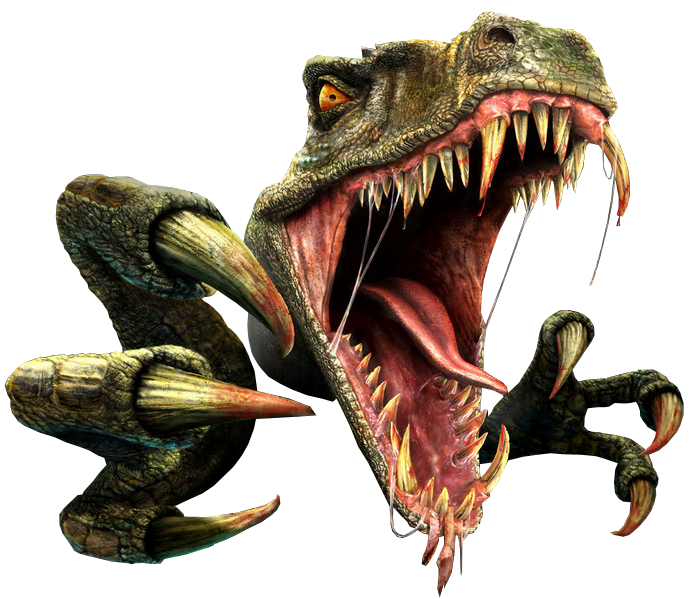

SHANAG

Shanag is a genus of dromaeosaurid theropod dinosaur from the Early Cretaceous Period of Mongolia. The type species of Shanag is S. ashile. The generic name refers to the black-hatted dancers in the Buddhist Cham dance. The specific name refers to the Ashile Formation, the old name for the layers where Shanag was found, used by Henry Fairfield Osborn. The bird-like features of these dinosaurs have led few scientists to argue that these species are better off classified as birds.
Shanag was a carnivore. It lived in the Cretaceous period and inhabited Asia. Its fossils have been found in places such as Ömnögovi (Mongolia). The range of habitat of the Shanag ashile (Turner et al., Norell, ad Hwang) was probably in terrestrial regions. Shanag ashile (Turner et al.) might have lived in groups like all the other dinosaur species.
Its feet carried a large recurved claw on the second toe. The tail was thin and long. It is estimated that Shanag was approximately 1.5 m long and weighed 5 kg. Shanag weight range is about 11 lb (5 kg). The relative dinosaur, Microraptria is around 2.2 lb (1 kg) in weight. The Zhenyuanlong (Zhenyuann's dragon) genus of the same family as Shanag is around 44 lb (20 kg) in weight.

This new fossil evidence supports theories about the nature of dinosaur mating displays and the evolutionary driver known as `sexual selection.
The reproduction process of Shanag ashile (Turner et al.) was oviparous like all the other dinosaur species. However, there is not much data on the breeding process of this dinosaur.
The diet of these theropod dinosaurs was a carnivore. The diet of these dinosaurs might have included small creatures like mammals, insects, and other reptiles. Although, the information on the diet of these dinosaur species is not very clear. The species of this family were similar to the extant Accitripids in killing their prey. They would leap onto the prey, then would under their body weight, and later use their claws to grip the prey.
Shanag (black-hatted dancers, Buddhist Cham dance) probably communicated through calls and songs like all the other dinosaur species.
Those communications likely included hoots and hollers, cracking sounds, dance and song, and even symbolic love calls made with showy plumage.
(/sɔːˈrɪskiə/ saw-RIS-kee-ə,meaning "reptile-hipped" from the Greek sauros (σαῦρος) meaning 'lizard' and ischion (ἴσχιον) meaning 'hip joint') [1] is one of the two basic divisions of dinosaurs (the other being Ornithischia), classified by their hip structure. They first appeared during the Triassic period, between 243 and 233.23 million years ago (mya), although the exact origin and timing of the evolution of dinosaurs is a subject of active research.
IGM 100/1119, a Shanag holotype of the Early Cretaceous period was discovered in Öösh Formation by Henry Fairfield Osborn. The holotype was named and described by Alan Turner, Mark Norell, and Sunny hai-Ching Hwang. In 2007.
Dromaeosaurs are known to have been feathered dinosaurs, and it is possible that Shanag had colorful plumage. The shanag has four feathers unlike other flying dinosaurs
The shanag is a small animal compared to other dinosaurs, Shanag weight range is about 11 lb (5 kg). The relative dinosaur, Microraptria is around 2.2 lb (1 kg) in weight.
Shanag ashile (Turner et al.) from the Early Cretaceous and discovered in the Öösh Formation was a small predator dinosaur just about 59 in (1.5 m) in length. This dinosaur is a member of feathered dinosaurs. It is a possible that this theropod dinosaur had colorful plumage. The information of this dinosaur was derived from the jaw fragments. There were complete dentary and maxilla articulation. The dentary is dorso-ventrally shallow and narrow. Also, compared to the maxillary teeth, the dentary teeth are smaller and even more closely packed.
It's a family of feathered coelurosaurian theropod dinosaurs. They were generally small to medium-sized feathered carnivores that flourished in the Cretaceous Period. Taxonomic supergroup that includes the basal Amoebozoa and Obazoa. That latter contains the Opisthokonta, which includes the Fungi, Animals and the Choanomonada, or Choanoflagellates. Animals are multicellular, eukaryotic organisms in the biological kingdom Animalia. With few exceptions, animals consume organic material, breathe oxygen, have myocytes and are able to move, can reproduce sexually, and grow from a hollow sphere of cells, the blastula, during embryonic development.
Some studies have placed it within the Microraptorinae clade, which included dinosaurs that some researchers think may have been capable of gliding, if not actual powered flight. At up to 1.5 meters in length, Shanag would have been one of the larger microraptor lines, so its gliding capability is uncertain.
They are bilaterian animals typically characterized by their anus forming before their mouth during embryonic development.They are bilaterian animals typically characterized by their anus forming before their mouth during embryonic development. is a deuterostome animal belonging to the phylum Chordata All chordates possess, at some point during their larval or adult stages, five distinctive physical characteristics (synapomorphies) that distinguish them from other taxa.
Late Cretaceous. A mass extinction occurs, leading to the extinction of dinosaurs, many marine reptiles, all flying reptiles, and many marine invertebrates and other species. Scientists believe the extinction was caused by an asteroid impact on the present-day Yucatan Peninsula in Mexico. But the shanags inhabited Asia. Its fossils have been found in places such as Ömnögovi (Mongolia).